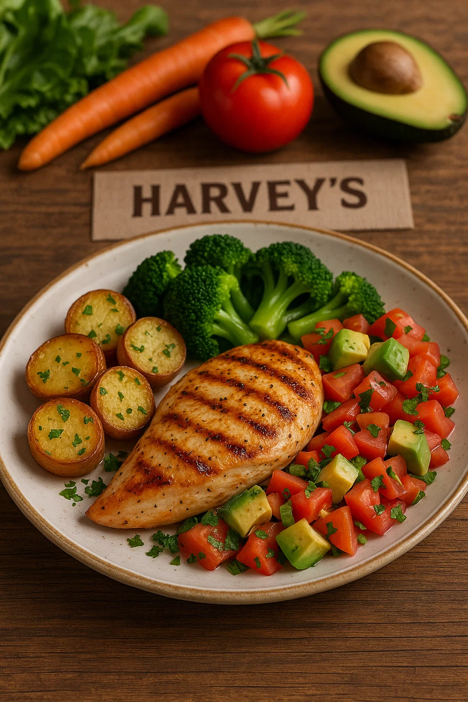

Nuestros ingredientes
En Harvey's, la calidad comienza desde el origen. Cada ingrediente que usamos es cuidadosamente seleccionado para garantizar frescura, sabor y nutrición. Trabajamos con proveedores confiables y productos locales siempre que es posible, porque creemos que una buena comida solo puede nacer de buenos ingredientes. En cada platillo, se nota el compromiso de Harvey's con la excelencia.
Nuestro equipo de cocina transforma esos ingredientes de alta calidad en experiencias únicas. Desde recetas clásicas hasta creaciones originales, cada preparación refleja pasión, cuidado y atención al detalle. En Harvey's, no solo servimos comida: servimos momentos que se disfrutan con todos los sentidos.
